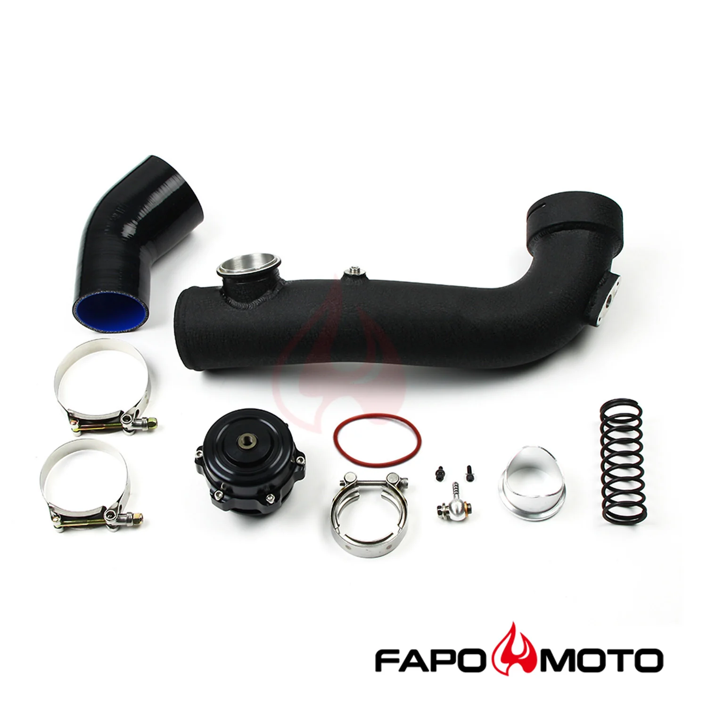

1 / 7Intake turbosprężarka rura dolotowa 50MM BOV Kit Do BMW N54 E60 E88 E89 E90 E92 135i 335i 535i Z4 FE591310
Aplikacja 2008-2010BMW E82 Coupe N54 135i 2008-2010 BMW E88 kabriolet N54 135i 2007-2010 BMW E90 Sedan N54 335i / 335xi 2006-2010 BMW E91 Touring N54 335i/335xi 2006-2010BMW E92 Coupe N54 335i/335xi 2008-2010 BMW 535i / 535ix (E60/E61) N54B30 3.0L z turbodoładowaniem 2009-2016 BMW Z4 sDrive35i/sDrive35is (E89) N54B30 3.0L z turbodoładowaniem Cechy Zwiększona moc, wydajniejszy przepływ powietrza z turbosprężarki, pop…
Application 2008-2010 BMW E82 Coupe N54 135i 2008-2010 BMW E88 Convertible N54 135i 2007-2010 BMW E90 Sedan N54 335i / 335xi 2006-2010 BMW E91 Touring N54 335i / 335xi 2006-2010 BMW E92 Coupe N54 335i / 335xi 2008-2010 BMW 535i / 535ix (E60/E61) N54B30 3.0L Turbocharged 2009-2016 BMW Z4 sDrive35i / sDrive35is (E89) N54B30 3.0L Turbocharged Features Increased BHP, more efficient airflow from turbo, improved throttle response High-performance blow off valve for street-driven, turbocharged and supercharged vehicles, supporting up to 1800hp per valve CNC machined from 6061 aluminum, each unit features a large 1.98" (50.5mm) valve with a Viton O-ring clamped in place to prevent sticking Valve stem and guide are Teflon-lubricated and hard anodized for superior wear resistance V-band clamp for clean and simple installation; oversized banjo fitting for faster actuator response Actuator with high-temp silicone Nomex-reinforced diaphragm for extended life Supports up to 35 PSI with alternate spring options 100% brand new, never used or installed Accessories in the photos are included 1 year warranty for any manufacturing defect Package Included 1X High Flow Charge Pipe Hard Kit 1X 50mm Style BOV Black 1X Silicon Elbow Black 2X T-Bolt Clamps 1X V-band Clamp Blow Off Valve Kit with replacement spring Other kits as shown in pictures
1199,99 PLN
Opis produktu
Aplikacja
- 2008-2010BMW E82 Coupe N54 135i
- 2008-2010 BMW E88 kabriolet N54 135i
- 2007-2010 BMW E90 Sedan N54 335i / 335xi
- 2006-2010 BMW E91 Touring N54 335i/335xi
- 2006-2010BMW E92 Coupe N54 335i/335xi
- 2008-2010 BMW 535i / 535ix (E60/E61) N54B30 3.0L z turbodoładowaniem
- 2009-2016 BMW Z4 sDrive35i/sDrive35is (E89) N54B30 3.0L z turbodoładowaniem
Cechy
- Zwiększona moc, wydajniejszy przepływ powietrza z turbosprężarki, poprawiona reakcja przepustnicy
- Wysokowydajny zawór wydmuchowy do pojazdów ulicznych, z turbodoładowaniem i doładowaniem, obsługujący do 1800 KM na zawór
- Obrabiane CNC z aluminium 6061, każde urządzenie jest wyposażone w duży zawór 1,98 cala (50,5 mm) z zaciśniętym pierścieniem typu O-ring z Vitonu, aby zapobiec przywieraniu
- Trzpień zaworu i prowadnica są smarowane teflonem i twardo anodowane, co zapewnia doskonałą odporność na zużycie
- Zacisk w kształcie litery V zapewniający czysty i prosty montaż; ponadwymiarowe złącze banjo zapewniające szybszą reakcję siłownika
- Siłownik z wysokotemperaturową membraną silikonową wzmocnioną Nomexem zapewniającą dłuższą żywotność
- Obsługuje do 35 PSI z alternatywnymi opcjami sprężyn
- 100% fabrycznie nowy, nigdy nie używany ani nie instalowany
- W zestawie akcesoria widoczne na zdjęciach
- 1 rok gwarancji na wszelkie wady produkcyjne
Pakiet wliczony w cenę
- 1X zestaw twardy rury ładującej o wysokim przepływie
- 1X 50mm BOV w kolorze czarnym
- 1X łokieć silikonowy czarny
- 2x zaciski śrubowe typu T
- 1X zacisk w kształcie litery V
- Zestaw zaworu wydmuchowego z wymienną sprężyną
- Pozostałe komplety jak na zdjęciach
Application
- 2008-2010 BMW E82 Coupe N54 135i
- 2008-2010 BMW E88 Convertible N54 135i
- 2007-2010 BMW E90 Sedan N54 335i / 335xi
- 2006-2010 BMW E91 Touring N54 335i / 335xi
- 2006-2010 BMW E92 Coupe N54 335i / 335xi
- 2008-2010 BMW 535i / 535ix (E60/E61) N54B30 3.0L Turbocharged
- 2009-2016 BMW Z4 sDrive35i / sDrive35is (E89) N54B30 3.0L Turbocharged
Features
- Increased BHP, more efficient airflow from turbo, improved throttle response
- High-performance blow off valve for street-driven, turbocharged and supercharged vehicles, supporting up to 1800hp per valve
- CNC machined from 6061 aluminum, each unit features a large 1.98" (50.5mm) valve with a Viton O-ring clamped in place to prevent sticking
- Valve stem and guide are Teflon-lubricated and hard anodized for superior wear resistance
- V-band clamp for clean and simple installation; oversized banjo fitting for faster actuator response
- Actuator with high-temp silicone Nomex-reinforced diaphragm for extended life
- Supports up to 35 PSI with alternate spring options
- 100% brand new, never used or installed
- Accessories in the photos are included
- 1 year warranty for any manufacturing defect
Package Included
- 1X High Flow Charge Pipe Hard Kit
- 1X 50mm Style BOV Black
- 1X Silicon Elbow Black
- 2X T-Bolt Clamps
- 1X V-band Clamp
- Blow Off Valve Kit with replacement spring
- Other kits as shown in pictures
FAPO Polska
Ten produkt obsługujemy lokalnie
Autoryzowana obsługa
FAPO Polska prowadzi katalog, kontakt i zamówienia bez odsyłania klienta do zewnętrznych sklepów.
Dobór po aucie
Sprawdzamy dopasowanie produktu do pojazdu, rocznika i wersji przed finalizacją zamówienia.
Wsparcie po zakupie
Masz kontakt w Polsce w sprawach zamówień, wysyłki, gwarancji i zwrotów.